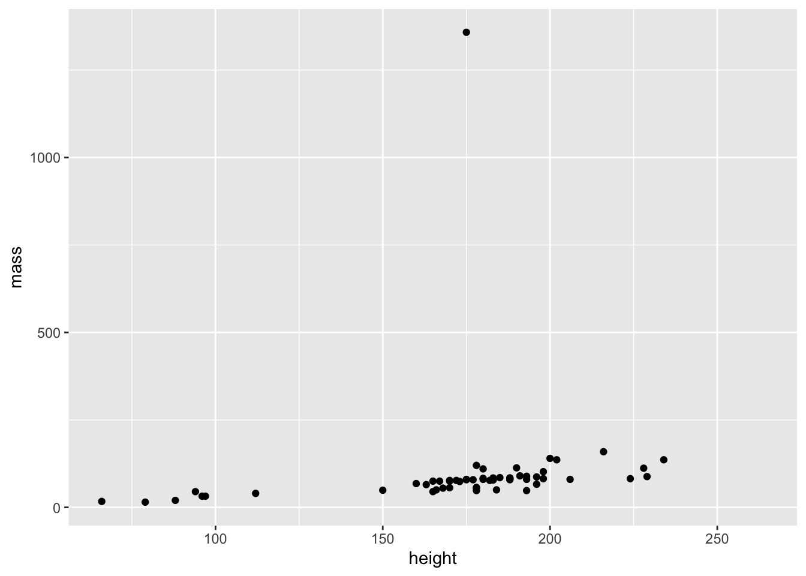

library(tidyverse)── Attaching packages ─────────────────────────────────────── tidyverse 1.3.2 ──
✔ ggplot2 3.3.6 ✔ purrr 0.3.5
✔ tibble 3.1.8 ✔ dplyr 1.0.10
✔ tidyr 1.2.1 ✔ stringr 1.4.1
✔ readr 2.1.3 ✔ forcats 0.5.2
── Conflicts ────────────────────────────────────────── tidyverse_conflicts() ──
✖ dplyr::filter() masks stats::filter()
✖ dplyr::lag() masks stats::lag()starwars# A tibble: 87 × 14
name height mass hair_…¹ skin_…² eye_c…³ birth…⁴ sex gender homew…⁵
<chr> <int> <dbl> <chr> <chr> <chr> <dbl> <chr> <chr> <chr>
1 Luke Skywa… 172 77 blond fair blue 19 male mascu… Tatooi…
2 C-3PO 167 75 <NA> gold yellow 112 none mascu… Tatooi…
3 R2-D2 96 32 <NA> white,… red 33 none mascu… Naboo
4 Darth Vader 202 136 none white yellow 41.9 male mascu… Tatooi…
5 Leia Organa 150 49 brown light brown 19 fema… femin… Aldera…
6 Owen Lars 178 120 brown,… light blue 52 male mascu… Tatooi…
7 Beru White… 165 75 brown light blue 47 fema… femin… Tatooi…
8 R5-D4 97 32 <NA> white,… red NA none mascu… Tatooi…
9 Biggs Dark… 183 84 black light brown 24 male mascu… Tatooi…
10 Obi-Wan Ke… 182 77 auburn… fair blue-g… 57 male mascu… Stewjon
# … with 77 more rows, 4 more variables: species <chr>, films <list>,
# vehicles <list>, starships <list>, and abbreviated variable names
# ¹hair_color, ²skin_color, ³eye_color, ⁴birth_year, ⁵homeworldglimpse(starwars)Rows: 87
Columns: 14
$ name <chr> "Luke Skywalker", "C-3PO", "R2-D2", "Darth Vader", "Leia Or…
$ height <int> 172, 167, 96, 202, 150, 178, 165, 97, 183, 182, 188, 180, 2…
$ mass <dbl> 77.0, 75.0, 32.0, 136.0, 49.0, 120.0, 75.0, 32.0, 84.0, 77.…
$ hair_color <chr> "blond", NA, NA, "none", "brown", "brown, grey", "brown", N…
$ skin_color <chr> "fair", "gold", "white, blue", "white", "light", "light", "…
$ eye_color <chr> "blue", "yellow", "red", "yellow", "brown", "blue", "blue",…
$ birth_year <dbl> 19.0, 112.0, 33.0, 41.9, 19.0, 52.0, 47.0, NA, 24.0, 57.0, …
$ sex <chr> "male", "none", "none", "male", "female", "male", "female",…
$ gender <chr> "masculine", "masculine", "masculine", "masculine", "femini…
$ homeworld <chr> "Tatooine", "Tatooine", "Naboo", "Tatooine", "Alderaan", "T…
$ species <chr> "Human", "Droid", "Droid", "Human", "Human", "Human", "Huma…
$ films <list> <"The Empire Strikes Back", "Revenge of the Sith", "Return…
$ vehicles <list> <"Snowspeeder", "Imperial Speeder Bike">, <>, <>, <>, "Imp…
$ starships <list> <"X-wing", "Imperial shuttle">, <>, <>, "TIE Advanced x1",…?starwars
view(starwars)
ncol(starwars)[1] 14nrow(starwars)[1] 87dim(starwars)[1] 87 14dim(starwars)[1][1] 87dim(starwars)[2][1] 14ggplot(data=starwars, aes(x=height, y=mass))+ geom_point()Warning: Removed 28 rows containing missing values (geom_point).
ggplot(data=starwars, aes(x=height, y=birth_year))+ geom_point()Warning: Removed 44 rows containing missing values (geom_point).